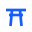

Sentori — 守望之門
鳥居标记的是一道界:穿过它的都被看见。笠木、贯、两根收分柱 —— 全直线、全尖角。
监测产品的本分正是守在界上:平时静默,越界才出声;沉默的探针就是修复保持的证明。
标准版(蓝块)
16
32
64
128
256
线条版 · 深底 · 词标锁定

线条版(浅底文档)
Sentori — insight-mobile深底 + 浏览器标签
sentori词标锁定
品牌家族
GOLIA · 圆
Golia Lab · 沙漏
tiktoken · 方 t
sentori · 鳥居
几何规格
viewBox 0 0 32 32
底块 rect rx=7 fill=#155dfc(与家族同圆角同蓝)
图形 M6 10 H26 M9 15 H23 M12 10 L10.5 26 M20 10 L21.5 26
笠木 y=10 通宽 · 贯 y=15 内收 · 双柱收分(上窄下宽)
描边 2.7 / miter join / butt cap(全尖角,无圆头)
色值 蓝 #155dfc · 白 #fff · 深底亮蓝 #5b8cff
文件 sentori-logo.svg(蓝块)· sentori-mark.svg(线条)
sentori-mark-ink.svg(随文字墨色,产品内用)· PNG 16–512
产品内 侧栏/状态栏/登录页用墨色线条版(React SentoriMark),
不与 UI 强调色抢色;
蓝块版只做 favicon / 应用图标 / 对外物料。